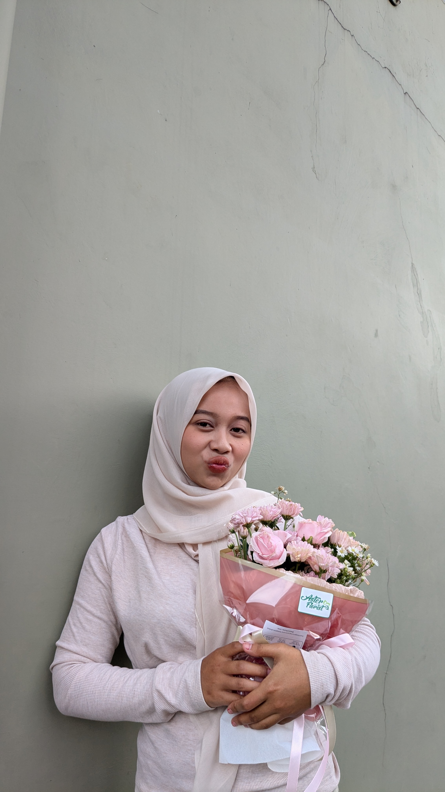
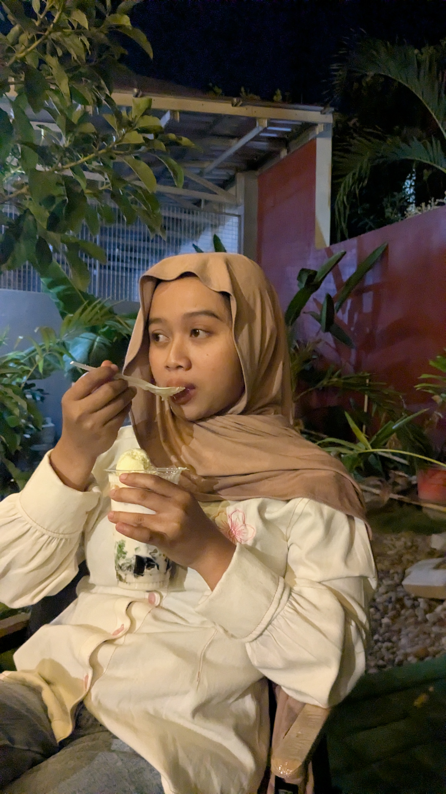
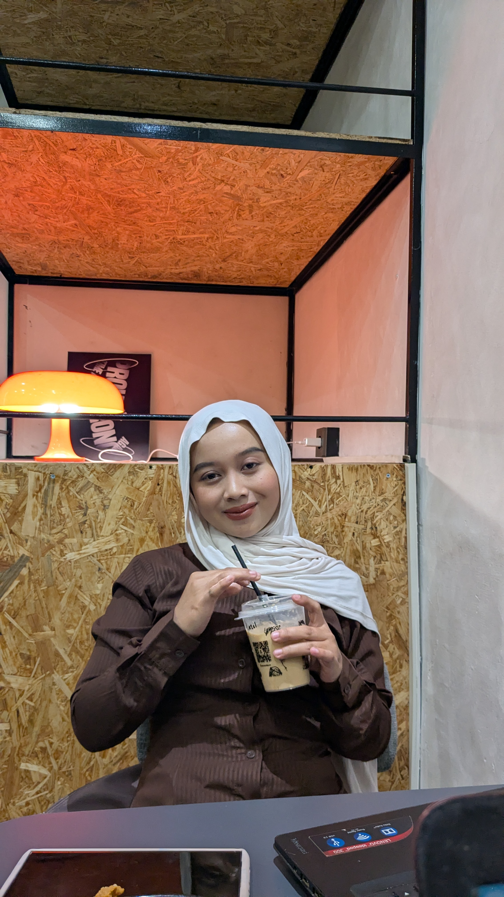
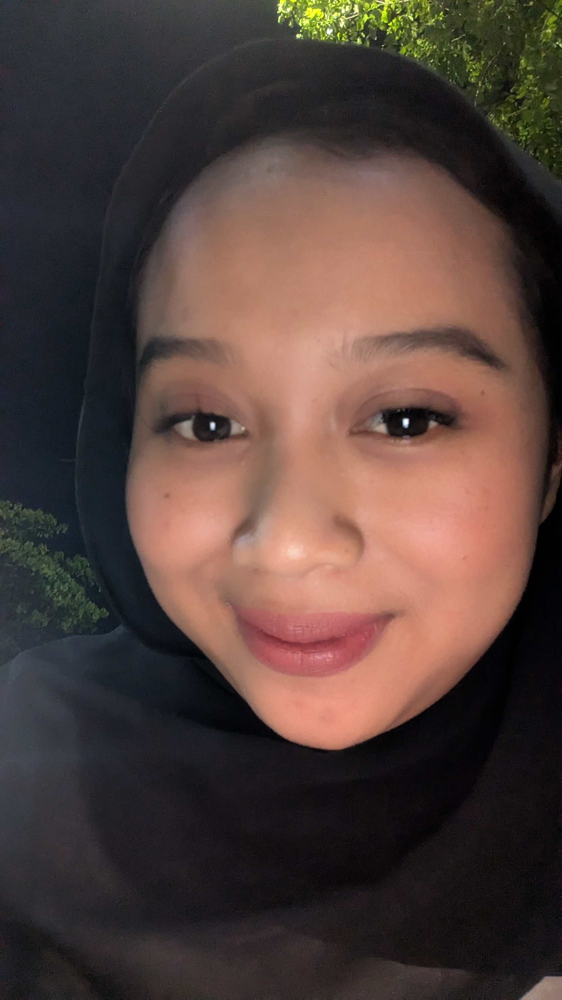
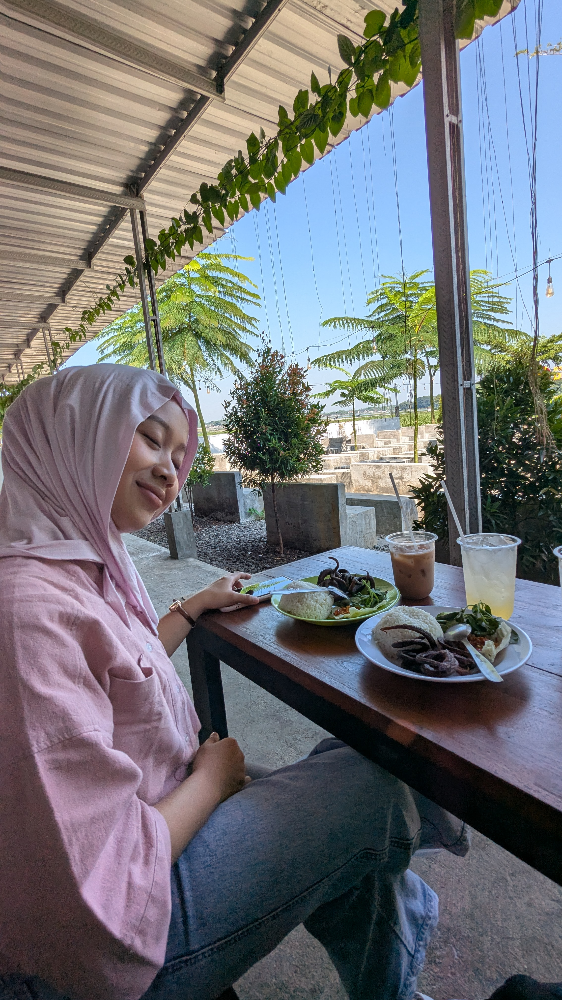
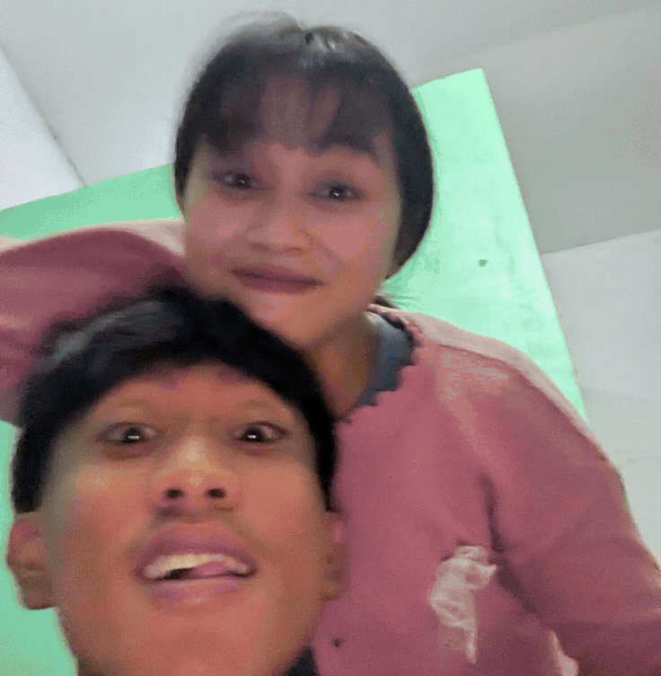
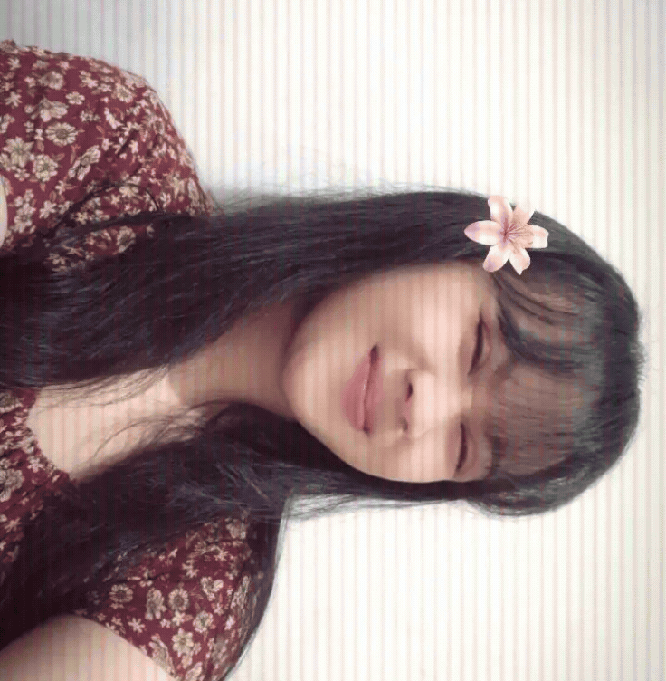

100 reasons why i love you 💙
tap a photo to see it bigger — scroll pauses itself while you read








- Senyummu gampang banget bikin hariku enakan
- Kamu selalu tahu cara bikin aku ketawa
- Ngobrol sama kamu nggak pernah terasa ngebosenin
- Kamu mau dengerin ceritaku, bahkan yang receh
- Di dekat kamu, aku bisa jadi diri sendiri
- Kamu perhatian sama hal-hal kecil tentang aku
- Caramu ketawa selalu bikin aku ikut senang
- Kamu bikin hari biasa terasa spesial
- Kamu tetap sabar menghadapi aku
- Pesan darimu selalu sukses bikin aku senyum
- Kamu punya cara sendiri buat bikin aku tenang
- Aku suka cara kamu cerita dengan semangat
- Kamu selalu berusaha ngerti perasaanku
- Kamu bikin aku merasa diterima apa adanya
- Hal sederhana jadi seru kalau bareng kamu
- Kamu nggak pernah capek nyemangatin aku
- Aku suka banget suara kamu
- Kamu selalu punya tempat spesial buat aku
- Kamu bikin aku pengin jadi lebih baik
- Aku nyaman cerita apa aja ke kamu
- Kamu perhatian tanpa perlu diminta
- Kamu selalu ingat hal-hal kecil yang aku suka
- Aku suka cara kamu memperlakukan orang lain
- Kamu punya hati yang baik banget
- Bareng kamu, waktu rasanya cepet banget
- Kamu bikin aku kangen meski baru berpisah
- Aku suka tatapan kamu waktu lagi cerita
- Kamu bisa bikin suasana jadi lebih hidup
- Kamu nggak takut nunjukin sisi lucumu
- Aku suka semua obrolan random kita
- Kamu bikin aku merasa penting
- Kamu selalu nyempetin waktu buat aku
- Aku suka cara kamu manggil namaku
- Kamu bikin tempat sederhana terasa nyaman
- Kamu tetap ada saat aku lagi nggak baik-baik aja
- Aku suka semangatmu mengejar hal yang kamu mau
- Kamu bikin aku merasa punya teman satu tim
- Kamu selalu bisa bikin aku lupa sama capek
- Aku suka perhatian kecil yang kamu kasih
- Kamu nggak pernah bikin aku merasa sendirian
- Kamu punya cara unik buat nunjukin sayang
- Aku suka banget kalau kita bercanda bareng
- Kamu tetap manis bahkan saat lagi ngambek
- Kamu bikin aku nyaman jadi manja
- Aku suka cara kita saling melengkapi
- Kamu bikin aku berani menghadapi banyak hal
- Kamu bisa bikin hal kecil jadi kenangan
- Aku suka saat kita diam tapi tetap nyaman
- Kamu selalu punya cerita seru buat dibagi
- Kamu menghargai aku dan pendapatku
- Aku suka caramu minta maaf dengan tulus
- Kamu mau belajar bareng saat ada masalah
- Kamu bikin aku merasa aman jadi diriku sendiri
- Aku suka semua kebiasaan kecilmu
- Kamu selalu bikin aku merasa disayang
- Kamu inget hal yang bahkan aku sendiri suka lupa
- Aku suka cara kamu peduli sama orang-orang terdekatmu
- Kamu bikin aku punya banyak hal buat disyukuri
- Kamu nggak harus sempurna buat bikin aku bahagia
- Aku suka ketulusanmu dalam banyak hal
- Kamu selalu punya cara buat mencairkan suasana
- Aku suka saat kamu cerita tentang harimu
- Kamu bikin aku semangat bangun pagi
- Kamu tetap percaya sama aku saat aku ragu
- Aku suka caramu bikin aku merasa dimengerti
- Kamu nggak pernah meremehkan hal yang penting buatku
- Kamu selalu jadi kabar baik di tengah hari yang sibuk
- Aku suka momen sederhana saat kita jalan bareng
- Kamu punya senyum yang pengin aku lihat terus
- Kamu bikin aku betah berlama-lama sama kamu
- Aku suka saat kamu antusias sama hal yang kamu suka
- Kamu bikin aku merasa beruntung punya kamu
- Kamu selalu berusaha menepati janji
- Aku suka caramu bikin aku merasa dihargai
- Kamu mau tumbuh dan belajar bareng aku
- Kamu tetap lucu tanpa berusaha keras
- Aku suka saat kamu jadi pendengar terbaikku
- Kamu bikin aku merasa pulang saat bersama kamu
- Kamu selalu punya tempat buat cerita-ceritaku
- Aku suka cara kamu menunjukkan perhatian
- Kamu bikin aku lebih sering ketawa daripada cemberut
- Kamu selalu ngasih aku alasan buat kangen
- Aku suka cara kamu menghormati batasanku
- Kamu bikin aku merasa cukup, apa adanya
- Kamu mau nemenin aku melakukan hal sederhana
- Aku suka betapa nyamannya ngobrol sama kamu
- Kamu nggak gengsi buat jadi diri sendiri
- Kamu bikin aku percaya kalau cinta bisa terasa tenang
- Aku suka caramu bikin kejutan kecil
- Kamu selalu berusaha ada buat aku
- Kamu bikin aku pengin berbagi banyak cerita
- Aku suka saat kita punya lelucon sendiri
- Kamu sabar waktu aku lagi banyak pikiran
- Kamu bikin masa depan terasa seru buat dibayangin
- Aku suka semua kenangan yang kita buat
- Kamu adalah orang yang paling pengin aku kabari
- Aku selalu senang bisa bilang, "ini pacarku"
- Pokoknya, aku sayang kamu karena kamu adalah kamu